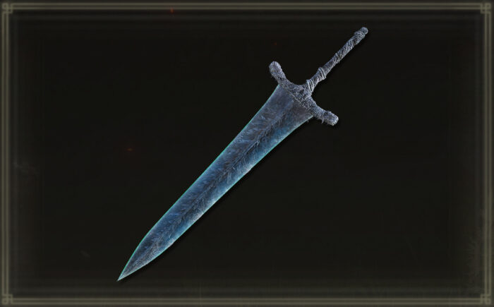

A Moonlight Greatsword é uma das espadas mais icônicas de Elden Ring e da série Dark Souls. Esta espada enorme e elegante é associada à luz da lua e à magia misteriosa. Ela possui uma lâmina que brilha com um tom prateado, refletindo seu poder mágico e sua ligação com as forças celestiais. A habilidade especial da Moonlight Greatsword é a Comet, uma poderosa magia que lança um feixe de luz azulada, causando dano mágico considerável aos inimigos. A espada é famosa por ser usada por diversas figuras lendárias ao longo dos jogos da série, sendo símbolo de sabedoria e poder arcano. Em Elden Ring, ela é encontrada ao completar a quest da Ranni, e é uma das armas mais desejadas por aqueles que buscam dominar a magia e o combate físico ao mesmo tempo.